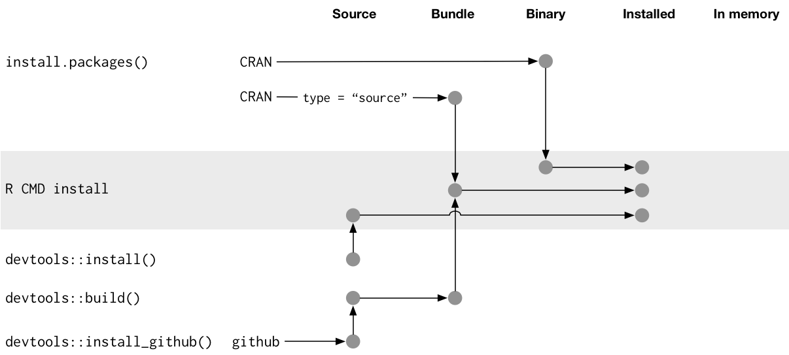

More about R packages¶
This page contains some more advanced information about R packages.
R packages: A short Primer¶
What is a package, really?¶
An R package is essentially a contained folder and file structure containing R code (and possibly C/C++ or other code) and other files relevant for the package e.g. documentation(vignettes), licensing and configuration files. Let us look at a very simple example
$ git clone https://github.com/MatPiq/R_example.git
$ cd R_example
$ tree
.
├── DESCRIPTION
├── NAMESPACE
├── R
│ └── hello.R
├── man
│ └── hello.Rd
└── r_example.Rproj
Installing tree as non-root on Linux Ubuntu
If you are on a Linux Ubuntu system where tree is not installed, and you do not have root permissions, you can do this to install it in your own area
1) Create a directory (in your home folder) to install in:
Change to that directory:
Now download tree:
Unpack the files:
You can use tree like this now, giving the full path:
Note: if you want to be able to use it with the command “tree” you could set an alias in your ~/.bashrc file and then source it:
Package states¶
An R packages can exist in five possible states
- Source: “source code” or “source files”. Development form.
- Bundled: The source code compressed into a single file, usually
tar.gzand sometimes referred to as “source tarballs”. Files in.Rbuildignoreare excluded. - Binary: A compressed and pre-compiled version of a bundle built for a specific architecture. Usually how the package is provided by CRAN. Much faster than having to compile yourself and no need for dev/build tools.
- Installed: A decompressed binary package located in a package library (more on this later).
- In-memory: When the installed package has been loaded from the library into
memory, using
require(pkg)orlibrary(pkg).

Source:
- https://r-pkgs.org/structure.html and
- https://nbisweden.github.io/RaukR-2021/rpackages_Sebastian/presentation/rpackages_Sebastian.html
Finding out if an R package is installed¶
There are many different ways to check if the package you are after is already installed - chances are it is! The simplest way is probably to simply try loading the package from within R
library(package-name)
Another option would be to create a dataframe of all the installed packages
ip <- as.data.frame(installed.packages()[,c(1,3:4)])
rownames(ip) <- NULL
ip <- ip[is.na(ip$Priority),1:2,drop=FALSE]
print(ip, row.names=FALSE)
However, this might not be so helpful unless you do additional filtering.
Another simple option is to grep the library directory. For example, both when loading R_packages at UPPMAX and R-bundle-Bioconductor at HPC2N the environment variable R_LIBS_SITE will be set to the path of the package
library.
Load R_packages
Then grep for some package
Installing your own packages¶
Sometimes you will need R packages that are not already installed. The solution to this is to install your own packages. These packages will usually come from CRAN (https://cran.r-project.org/) - the Comprehensive R Archive Network, or sometimes from other places, like GitHub or R-Forge
Here we will look at installing R packages with automatic download and with manual download. It is also possible to install from inside Rstudio.
Setup¶
We need to create a place for the own-installed packages to be and to tell R where to find them. The initial setup only needs to be done once, but separate package directories need to be created for each R version used.
R reads the $HOME/.Renviron file to setup its environment. It should be
created by R on first run, or you can create it with the command: touch
$HOME/.Renviron
NOTE: In this example we are going to assume you have chosen to place the R packages in a directory under your home directory, but in general it might be good to use the project storage for space reasons. As mentioned, you will need separate ones for each R version.
If you have not yet installed any packages to R yourself, the environment file should be empty and you can update it like this:
Warning
- If it is not empty, you can edit
$HOME/.Renvironwith your favorite editor so thatR_LIBS_USERcontains the path to your chosen directory for own-installed R packages.
It should look something like this when you are done:
NOTE Replace /home/u/user with the value of $HOME. Run echo $HOME to see its value.
NOTE The %V should be written as-is, it’s substituted at runtime with the active R version.
For each version of R you are using, create a directory matching the pattern
used in .Renviron to store your packages in. This example is shown for R
version 4.1.1:
Automatical download and install from CRAN¶
Note
You find a list of packages in CRAN (https://cran.r-project.org/) and a list of repos here: https://cran.r-project.org/mirrors.html
Please choose a location close to you when picking a repo.
In either case, the dependencies of the package will be downloaded and installed as well.
Example¶
In this example, we will install the R package stringr and use the repository http://ftp.acc.umu.se/mirror/CRAN/
Note: You need to load R (and any prerequisites, and possibly R-bundle-Bioconductor if you need packages from that) before installing packages.
There are other ways to install R packages, including from GitHub.
Automatic download and install from GitHub¶
If you want to install a package that is not on CRAN, but which do have a GitHub page, then there is an automatic way of installing, but you need to handle prerequsites yourself by installing those first. It can also be that the package is not in as finished a state as those on CRAN, so be careful.
To install packages from GitHub directly, from inside R, you first need to install the devtools package. Note that you only need to install this once.
This is how you install a package from GitHub, inside R:
Example¶
In this example we want to install the package quantstrat. It is not on CRAN, so let’s get it from the GitHub page for the project: https://github.com/braverock/quantstrat
We also need to install devtools so we can install packages from GitHub. In addition, quantstrat has some prerequisites, some on CRAN, some on GitHub, so we need to install those as well.
install.packages("devtools") # ONLY ONCE
install.packages("FinancialInstrument")
install.packages("PerformanceAnalytics")
devtools::install_github("braverock/blotter")
devtools::install_github("braverock/quantstrat")
Manual download and install¶
If the package is not on CRAN or you want the development version, or you for other reason want to install a package you downloaded, then this is how to install from the command line:
NOTE that if you install a package this way, you need to handle any dependencies yourself.
Note
Places to look for R packages
- CRAN (https://cran.r-project.org/)
- R-Forge (https://r-forge.r-project.org/)
- Project’s own GitHub page
- etc.
Keypoints
- You can check for installed packages
- from inside R with
installed.packages() - from BASH shell with the
-
ml help R/<version>at UPPMAX -ml spider R/<version>at HPC2N
- from inside R with
- Installation of R packages can be done either from within R or from the command line (BASH shell)
- CRAN is the recommended place to look for R-packages, but many packages can be found on GitHub and if you want the development version of a package you likely need to get it from GitHub or other place outside CRAN. You would then either download and install manually or install with something like devtools, from within R.
Install own packages on Bianca¶
- If an R package is not not available on Bianca already (like Conda repositories) you may have to use the wharf to install the library/package
- Typical workflow
- Install on Rackham
- Transfer to Wharf
- Move package to local Bianca R package path
- Test your installation
- Demo and exercise from our Bianca course:
- Installing R packages on Bianca